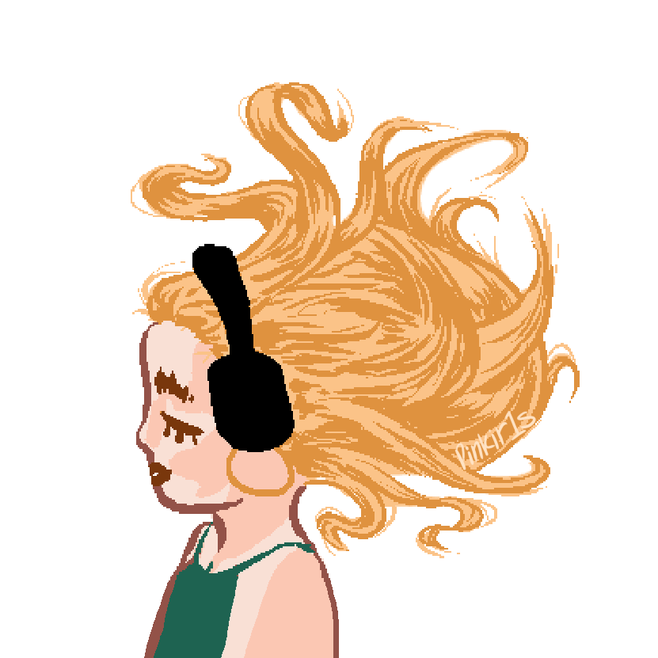
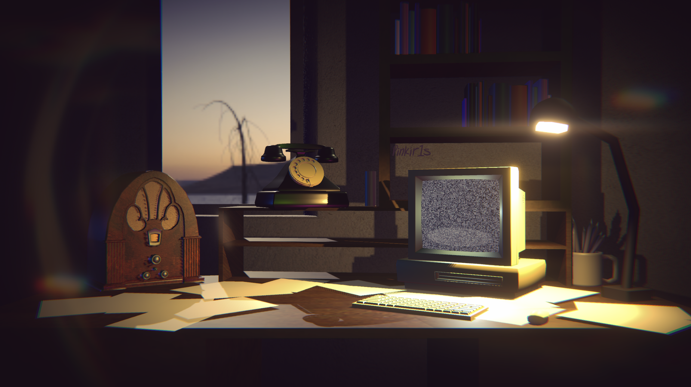
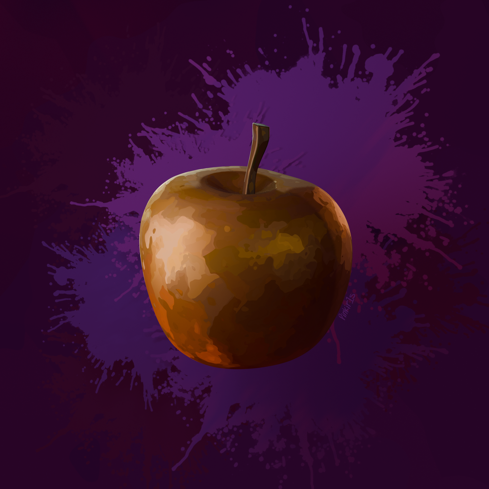
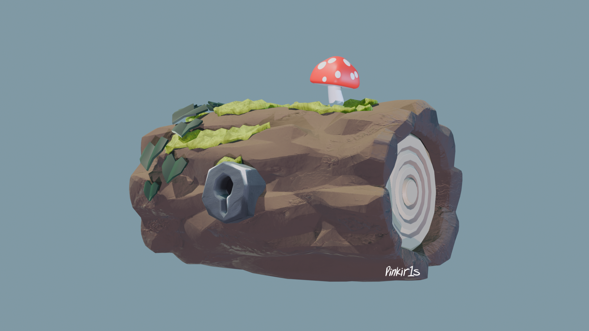
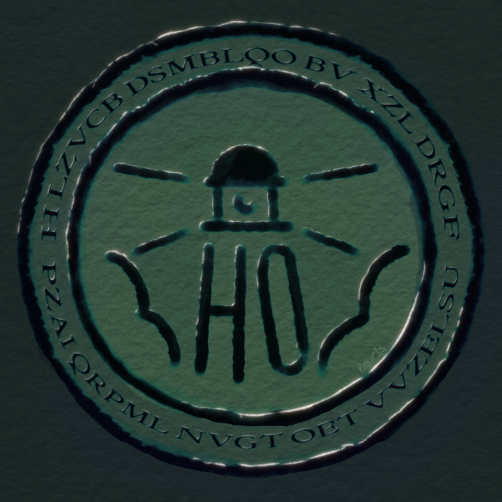
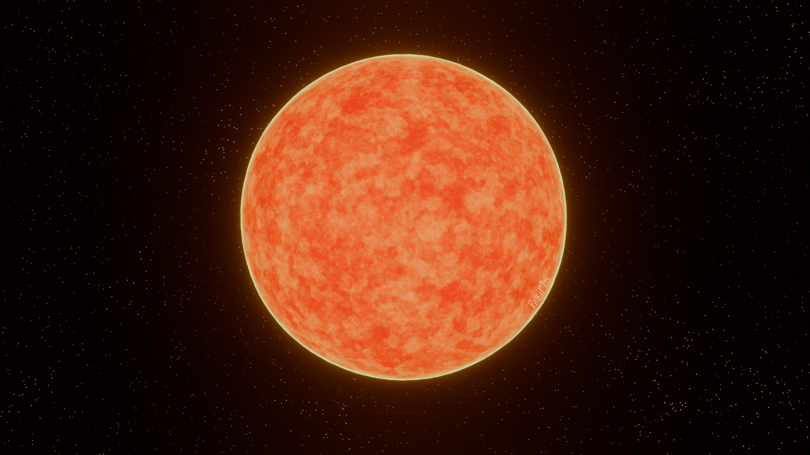
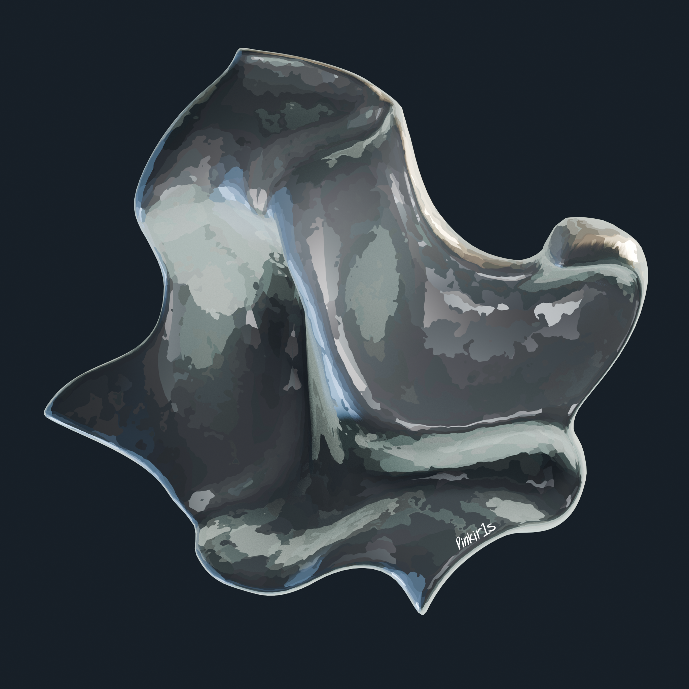

Hi!
I'm a game designer, 3D illustrator, digital artist, writer, part-time poet and full-time nerd.
I love lighthouses, science, nature, cameras, fandoms, art and coding. You will commonly find me trying to take photos of excellent natural lighting, walking by the creek and cooking something new.
I'm currently working on Harpville Oddities, a cosy paranormal mystery game about solving codes and saving friends.

My Art

The Desk of Harpville Oddities.

Golden Apple using Noise-based normals, made in Blender

Mossy Log, made in Blender.

The Emblem of Harpville Oddities.

Procedural Star, made in Blender

Metal Sheet using Noise-based normals, made in Blender